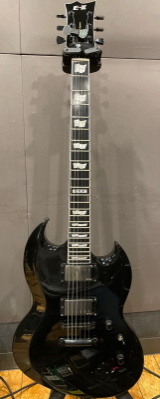
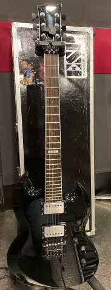
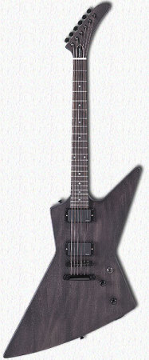
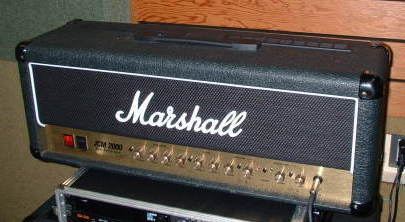
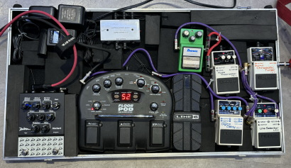
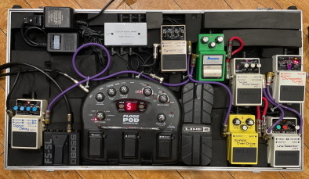
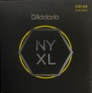
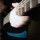

| TOOLBOX | ||
| GUITAR | ||
 |
ESP・E-ⅡVIPER BODY: Mahogany NECK: Mahogany FINGERBOARD: Ebony, 24frets w/White Binding GOTOH GE103B-T&GE101Z RADIUS: 305R SCALE: 24.75inch (628mm) NUT Bone (42mm) FRET: XJ,24frets INLAY: Flag,12th at ESP JOINT: Set-Neck TUNER: GOTOH SG301-04 MG-T BRIDGE: GOTOH GE103B-T GE101Z PICKUPS: (Front) EMG 66TW (Rear) EMG 57TW PARTS COLOR: Black CONTROL: Master Volume(w/Split SW), Master Tone(w/Split SW).Toggle PU Selector COLOR: Black |
|
 |
ESP・VIPER BODY: Mahogany NECK: Hard Maple 3P FINGERBOARD: Rosewood, 24frets w/White Binding RADIUS: 305R SCALE: 24.75inch (628mm) NUT (width): Locknut (42mm/R2) FRET: #216 INLAY: MOP Dot JOINT: Set-Neck TUNER: SPERZELR Trim-Lock BRIDGE: Kahler #2315 PICKUPS: (Front) EMG 66TW (Rear) EMG 57TW PARTS COLOR: Black CONTROL: Master Volume, Master Tone, Toggle PU Selector COLOR: Black ■現在の改造が施される前の仕様は下記のサイトにアップされています。 MUSICIAN'S GALLERY |
|
 |
EDWARDS E-EX-105E BODY : Mahogany NECK : Mahogany FNGERBORAD : Rosewood , 22frets SCALE : 628mm (24.75inch) / Medium JOINT : Set-Neck PICKUPS : (Front) EMG 81(Rear) EMG 81 CONTROL : Master Volume , MasterTone Toggle PU Selector BRIDGE : Tune Matic / Stop TailPeace |
|
| AMP | ||
 |
MARSHALL JCM 2000/DSL 100 |
|
| EFFECT BOARD | ||
| 現在 | ||
|  |
GUITAR ↓ BOSS TU‐2 ↓ BOSS LS-2 ↓ ↓ A) B) A) LINE 6 FLOOR POD⇒JC-120 B) BOSS ＮＳ－2⇒IBANEZ TS-9⇒ BOSS DD-7⇒Diezel HERBERT PEDAL⇒ MARSHALL/DSL100H |
|
| 以前 | ||
 |
GUITAR ↓ BOSS TU‐2 ↓ BOSS LS-2 ↓ ↓ A) B) A) BOSS SD-1⇒AW-3⇒LINE 6 FLOOR POD⇒JC-120 B) BOSS ＮＳ－2⇒IBANEZ TS-9⇒ BOSS DD-7⇒ MARSHALL/JCM 2000/DSL100 |
|
| PICK | ||
| PICKBOY Edge CarbonNylon 0.75mm |
||
| STRINGS | ||
 |
D'Addario NYXL STRINGS ０４６から００９のセットをレギュラーチューニングで使用。 |
|
| BACK TO |
 |